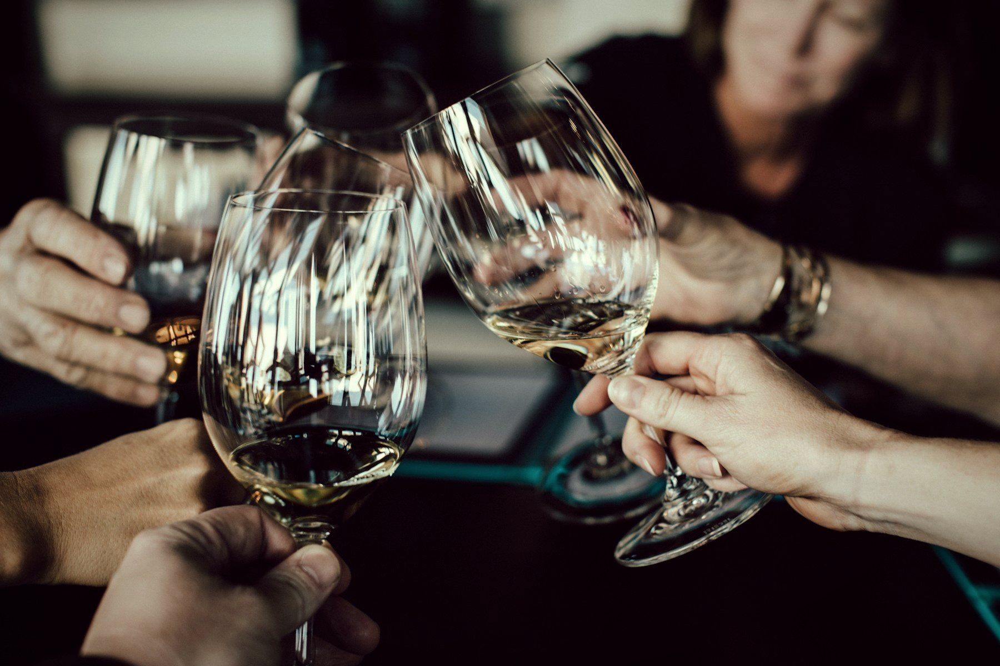
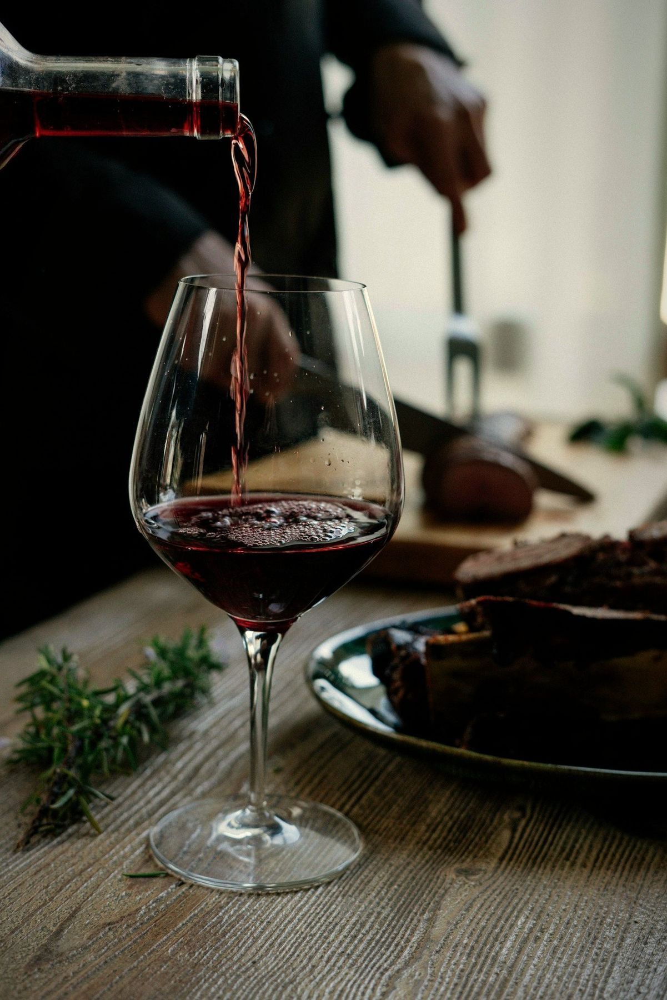

— Priča —
Želimo oživjeti vinsku scenu Slavonskog Broda.
Ideja se rodila na druženjima, gdje bi razgovor uvijek skrenuo na vino. Nakon dva mjeseca dogovora, u svibnju 2024. održana je osnivačka skupština udruge BrodWine, uz podršku predstavnika županije, gospodarske i obrtničke komore te brodskih vinarija.
Naša misija je promicati kulturu vina i osigurati znanje i dostupnost najboljih hrvatskih i svjetskih vinara svim članovima i građanima Slavonskog Broda i Brodsko-posavske županije – kroz predavanja, savjetovanja, degustacije i manifestacije.
I
Odabrane vinarije
Gostimo vinare iz Hrvatske, regije i svijeta – i njihove priče.
II
Vođeno sommelierima
Svaku večer vodi sommelier koji vino objašnjava jasno i pristupačno.
III
Ograničen broj mjesta
Manje grupe znače više razgovora i bolje iskustvo.
IV
Vino bez elitizma
Dobrodošli su i poznavatelji i oni koji tek ulaze u svijet vina.
Ljudi iza BrodWinea
[PORTRET]
Predsjednik
Dario Pilipović
[PORTRET]
Potpredsjednik
Dino Klem
[PORTRET]
Tajnik
Ante Gojević
[PORTRET]
Sommelier
Anto Prgomet
2. mjesto, 28. prvenstvo sommeliera Hrvatske (2025.)
[PORTRET]
Sommelier
Dalibor Velički